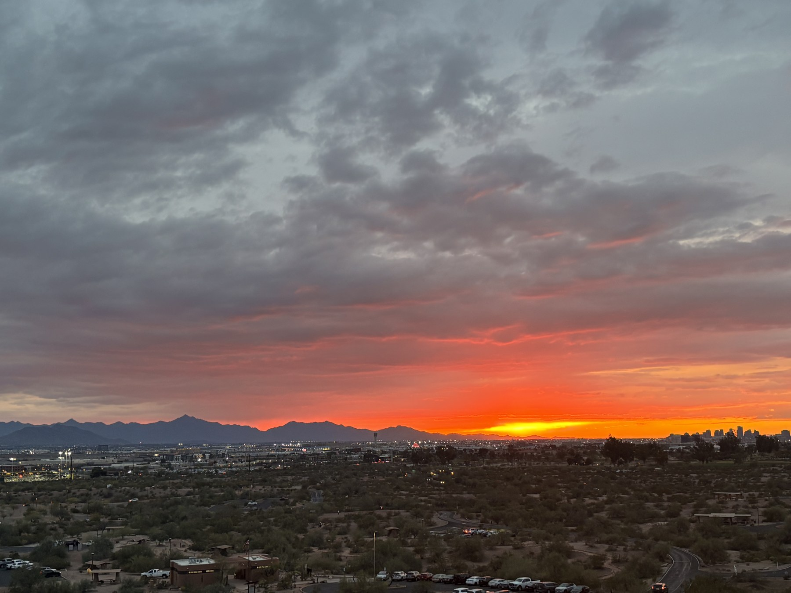
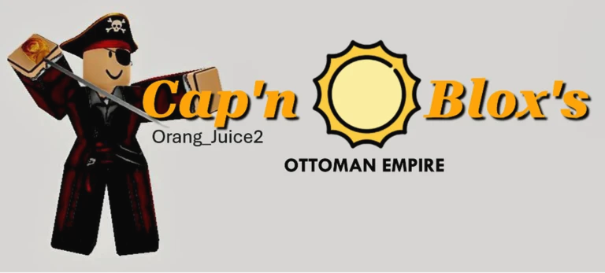
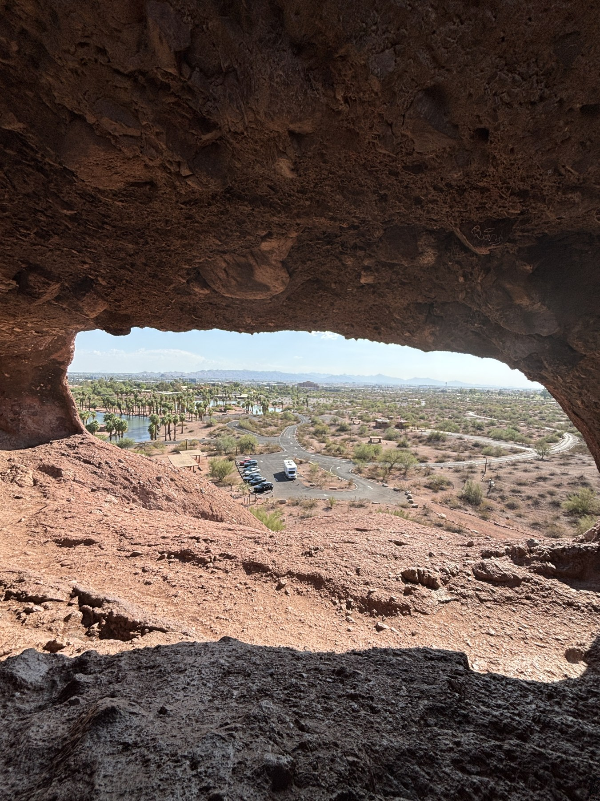

Hallway U
A campus app for discovering hotspots, finding friends, and safer evening walks. I assisted as an Early-Stage QA & UI Reviewer.
Diego Gomez
Computer science student at Shippensburg University. Building useful things, supporting live experiences, and finding new perspectives through photography.
HTML, CSS & Linux
Audio, lighting & microphone systems
Photography & Photoshop
VS Code, Xcode & GitHub
01 / Project Highlights
From testing apps to capturing moments and building worlds. A few things I’ve been part of.
A campus app for discovering hotspots, finding friends, and safer evening walks. I assisted as an Early-Stage QA & UI Reviewer.

Click “View all photos” below to view all my photos I took throughout the years

A world inspired by “The backrooms.” Explore corridors, rooms, and places from the 1960s and beyond, on PC, mobile, or console.
02 / About Me

Hello! My name is Diego Gomez! I’m a Computer science major at Shippensburg University! I like to spend my time traveling when I get the opportunity to explore new places or attend events, such as conventions! I have two dogs, one cat. I also found a passion for photography and learning new ways to expand my photo collections and enhance the photos I take to make it much better! I also am an Apple ecosystem fanatic and enjoy talking about all things Apple-related tech! Throughout my time in life, I picked up a skill for coding and coded, as well as worked on a few projects myself. Now you got to know me, take a scroll below and check out what else I have in store! Happy Scrolling!
// What I work with
HTML, CSS and Linux
Digital audio consoles, Stage lighting, microphone systems
Photoshop and device camera systems.
VS Code, Visual Studio, Xcode, Android Studio, GitHub
Eagle Scout
Problem Solving, Collaborative Problem Solving, Attention to Detail, Communication, Teamwork, Life Skills
03 / Resume
Support campus events with sound, lighting, and audiovisual equipment.
Support technology projects and test software to identify issues.
Washed dishes and kept the kitchen clean during the seasonal camp program.
Kept shared areas clean and ready for guests.
Maintained clean, usable spaces for students and staff.
04 / On repeat
A little soundtrack for your scroll. A new pick every minute from my country and modern collections.
Loading this minute’s pick…